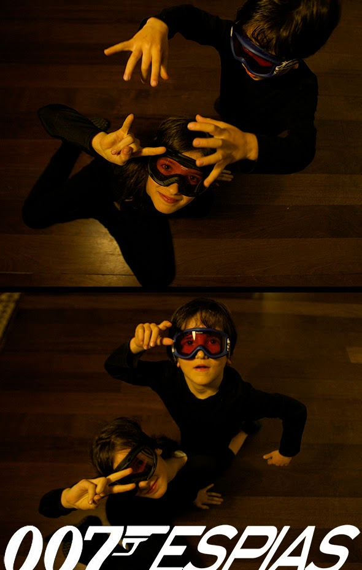

With black clothes and ski goggles we have 2 professional spies at home.


With black clothes and ski goggles we have 2 professional spies at home.

From a cereal box you can make a quick hat using scissors and a staple gun. A old picture of Noah :-)
Read more →
In process Masks made of plaster. To be on the safe side, we used Vaselina and plastic wrap. In Arbeit
Read more →
I see on the internet, that people are preparing Halloween, at least looking for ideas. Here is a little girls costume from the party last year.
Read more →
Created by my friend Josefa. In 5 min an Indian! Cut a stripe (3cm) of cardboard with waves inside (perpendicular to waves) and then stick the…
Read more →
I present the wings of Julieta costume of last year. The beautiful work of Anna also impacts Joanet. :-)
Read more →